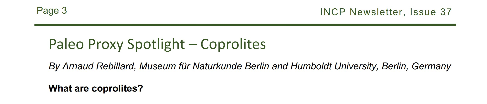
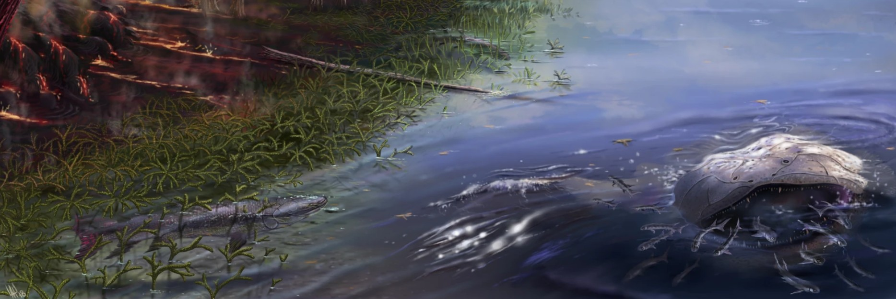
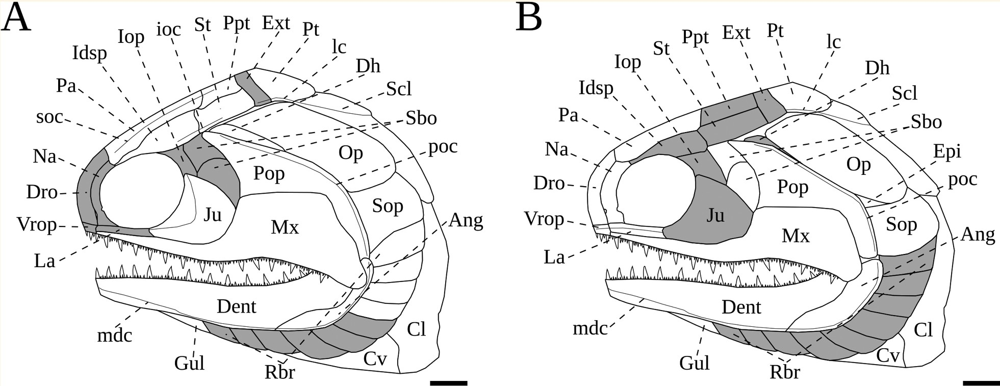

Updates
News, publications, fieldwork and other updates.
Contribution to the International Network for Conservation Paleobiology Newsletter

I was invited to write a section about how to use coprolites (fossilised faces) as scientific proxy. This was published in the newsletter of September 2026
Read the full newsletterNew publication

🚨 New research in Scientific Reports!🚨: Investigating a Devonian vertebrate assemblage with synchrotron microtomography of coprolites! We used fossilised poop and synchrotron microtomography to explore the diet and ecology of Devonian vertebrates!
Read the open-access articleNew publication

🚨New collab in Fossil Record!🚨: New palaeontological remains from the early Permian Réalmont Basin (Tarn, France): implications for late-Variscan palaeobiogeography and Progyrolepis taxonomy (Actinopterygii) and featuring new coprolites!
Read the open-access articleNew publication
Excited to see the publication in the Journal of Systematic Palaeontology of Franchessella pohlcremeri gen. et sp. nov., a new aeduellid fish from the Early Permian of France! Based on specimens from the Franchesse Lagerstätte, this study sheds new light on the ontogeny and evolution of early ray-finned fishes. And this paper includes a coprolite! Inside, an almost perfectly preserved maxilla of this new taxon which was segmented.
access the paper